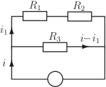

Long description: resistor

Alt text: A circuit diagram shows three resistors, \(R_1\), \(R_2\), and \(R_3\), connected in a manner that indicates current relationships.
This description was generated by AI and has not been verified by a human. If you spot an error, please use the feedback link below.
- The diagram illustrates an electrical circuit containing three components labeled \(R_1\), \(R_2\), and \(R_3\), representing resistors.
- Resistors \(R_1\) and \(R_2\) are placed in series across the top line of the circuit.
- Resistor \(R_3\) is placed below \(R_1\) and \(R_2\), forming a bottom line.
- An arrow labeled \(i_1\) indicates the current flowing through the branch containing \(R_1\). The same label \(i_1\) is placed next to the top-left vertical side of the circuit, suggesting a current direction.
- The top-right side of the circuit, where \(R_2\) is located, has an arrow pointing right with a label indicating a current \(i - i_1\).
- The bottom line, containing \(R_3\), has an arrow pointing right with a label \(i\). The bottom-left vertical side of the circuit has an arrow labeled \(i'\).
- All branches are connected between two points, forming a closed loop with a voltage source symbol (a circle) at the bottom.